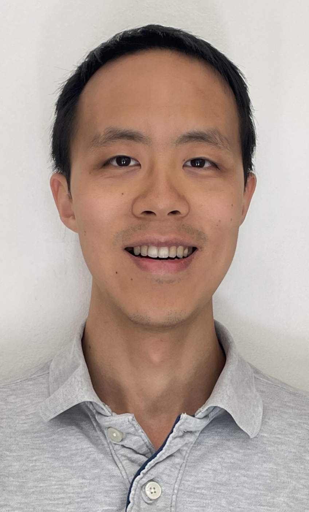

|
Frank C.Y. Chiu
|
 |
Frank (C.Y.) Chiu
Research Engineer II
School of Electrical and Computer Engineering (ECE)
Georgia Institute of Technology
Email: cyc at gatech dot edu
Office: TSRB 439
[Google Scholar][Curriculum Vitae]
|
About me
I am currently a Research Engineer II at the Georgia Institute of Technology, in the School of Electrical and Computer Engineering. My supervisor is Dr. Justin Romberg. I received my Ph.D. in December 2023 from the University of California, Berkeley, in the Department of Electrical Engineering and Computer Sciences. Please call me Frank.
My research develops game-theoretic and optimization-based algorithms for trustworthy multi-agent systems, with a focus on enabling safe, efficient, and equitable interactions in modern transportation systems. By integrating tools from game theory, control, optimization, learning, and robotics, I seek to understand how autonomous agents and human decision-makers interact, predict their responses to one another, and design algorithms and incentives that shape these interactions toward desirable outcomes.
My research spans two complementary directions:
Game-theoretic motion prediction and planning: I develop algorithms for modeling and predicting strategic interactions among autonomous systems and surrounding agents. My work encompasses dynamic-game equilibrium computation, learning agent objectives and constraints from observed interactions, and robust interactive motion planning under uncertainty. These methods aim to enable autonomous systems to make safe and intelligent decisions in complex, dynamically evolving environments;
Equitable and effective congestion control: I develop game-theoretic models and incentive mechanisms for improving transportation network performance while accounting for heterogeneous traveler preferences and socioeconomic circumstances. My research examines how travelers respond to congestion pricing and other policy interventions, with particular emphasis on designing policies that balance traffic efficiency, economic equity, and broader societal objectives.
Looking ahead, I aim to bridge vehicle-level autonomy and societal-scale transportation control, developing scalable methods that jointly shape local multi-agent interactions and network-wide outcomes. More broadly, I seek to extend these methodological advances to other networked systems where strategic agents interact through shared infrastructure.
I am honored to have had the opportunity to deliver a Rising Stars Talk at the 2026 IEEE CSS Rising Stars Symposium.
The best way to reach me is by email, at cyc at gatech dot edu.
Academic Employment
Postdoctoral Fellow and Research Engineer II in the School of Electrical and Computer Engineering (ECE), Georgia Institute of Technology, Aug. 2024 - now
Ph.D. in Electrical Engineering and Computer Sciences (EECS), University of California, Berkeley, Aug. 2018 - Dec. 2023
M.S. in Electrical Engineering and Computer Sciences (EECS), University of California, Berkeley, Sep. 2018 - Jun. 2020
B.S. in Electrical Engineering (EE), National Taiwan University, Sep. 2014 - Jun. 2018
Research Interests
Game Theory, Mechanism Design
Systems Theory, Control Theory
Convex Optimization, Nonlinear Optimization
Miscellaneous
Outside of research, I like to hike, try cooking new recipes, play board games, and read all kinds of books from biographies to speculative fiction.
|